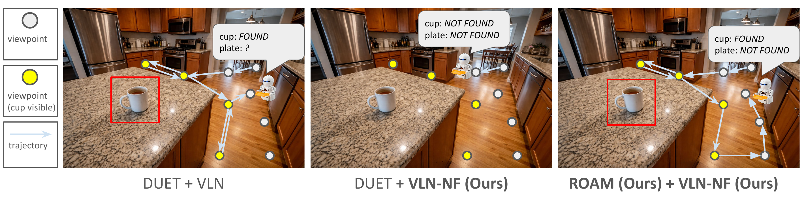
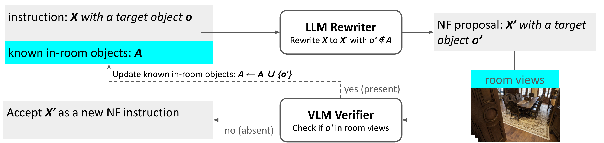
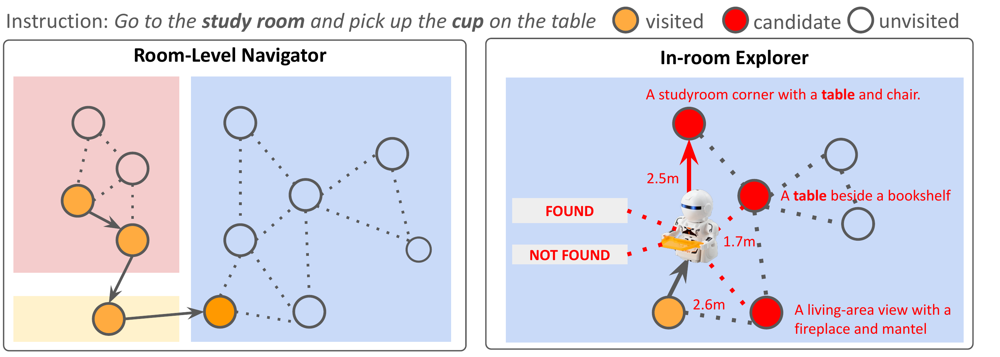

Abstract
Conventional Vision-and-Language Navigation (VLN) benchmarks assume instructions are feasible and the referenced target exists, leaving agents ill-equipped to handle false-premise goals. We introduce VLN-NF, a benchmark with false-premise instructions where the target is absent from the specified room and agents must navigate, gather evidence through in-room exploration, and explicitly output NOT-FOUND. VLN-NF is constructed via a scalable pipeline that rewrites VLN instructions using an LLM and verifies target absence with a VLM, producing plausible yet factually incorrect goals. We further propose REV-SPL to jointly evaluate room reaching, exploration coverage, and decision correctness. To address this challenge, we present ROAM, a two-stage hybrid that combines supervised room-level navigation with LLM/VLM-driven in-room exploration guided by a free-space clearance prior. ROAM achieves the best REV-SPL among compared methods, while baselines often under-explore and terminate prematurely under unreliable instructions.

False-premise VLN
VLN-NF turns feasible navigation episodes into cases where the referenced target is absent from the specified room, forcing the agent to reason about infeasibility instead of blindly pursuing a target.
Evidence-grounded evaluation
REV-SPL measures whether an agent reaches the right room, explores enough of it, and makes the correct FOUND vs. NOT-FOUND decision without rewarding unsupported early stopping.
Hybrid search with ROAM
ROAM combines a room-level navigator with an in-room explorer, letting the agent first localize the room and then gather object-level evidence with semantic and geometric guidance.
Method & Dataset
VLN-NF rewrites feasible REVERIE-style instructions into false-premise ones, evaluates evidence-grounded exploration with REV-SPL, and uses ROAM to combine room-reaching with in-room verification.


BibTeX
@misc{su2026vlnnf,
title = {VLN-NF: Feasibility-Aware Vision-and-Language Navigation with False-Premise Instructions},
author = {Hung-Ting Su and Ting-Jun Wang and Jia-Fong Yeh and Min Sun and Winston H. Hsu},
year = {2026},
eprint = {2604.10533},
archivePrefix= {arXiv},
primaryClass = {cs.RO},
note = {Accepted at ACL 2026},
url = {https://arxiv.org/abs/2604.10533}
}